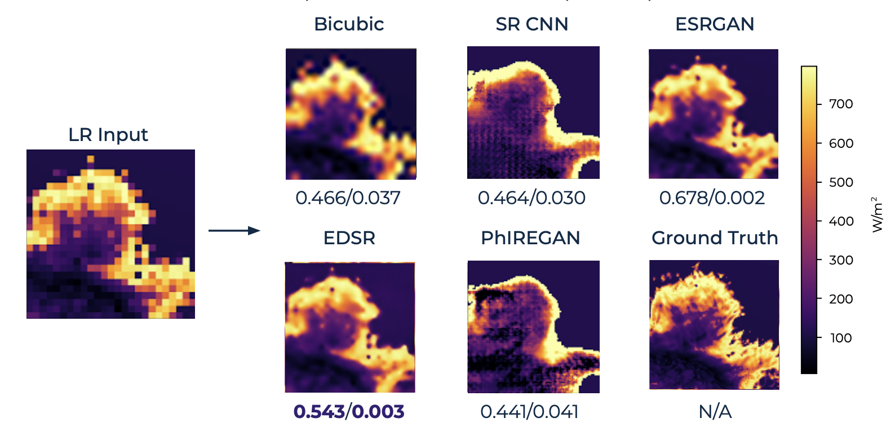
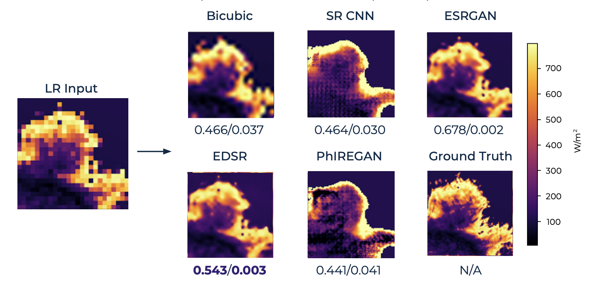
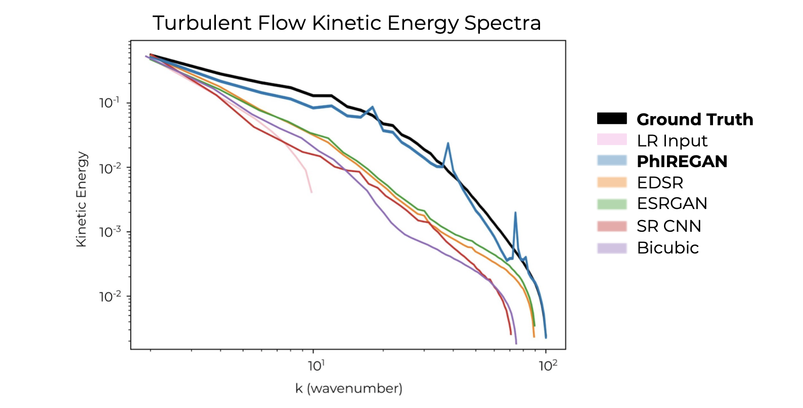
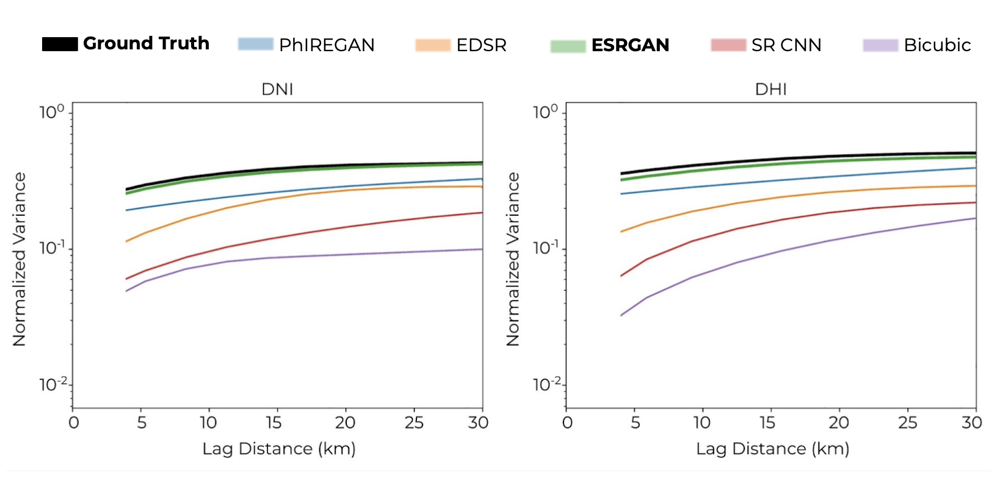

The transition to green energy grids depends on detailed wind and solar forecasts to optimize the siting and scheduling of renewable energy generation. Operational forecasts from numerical weather prediction models, however, only have a spatial resolution of 10 to 20-km, which leads to suboptimal usage and development of renewable energy farms. Weather scientists have been developing super-resolution (SR) methods to increase the resolution, but often rely on simple interpolation techniques or computationally expensive differential equation-based models. Recently, machine learning-based models, specifically the physics-informed resolution-enhancing generative adversarial network (PhIREGAN), have outperformed traditional downscaling methods. We provide a thorough and extensible benchmark of leading deep learning-based super-resolution techniques, including the enhanced super-resolution generative adversarial network (ESRGAN) and an enhanced deep super-resolution (EDSR) network on wind and solar data. We accompany the benchmark with a novel public, processed, and machine learning-ready dataset for benchmarking super-resolution methods on wind and solar data.
Narrated Overview
Our Datasets
The training data was obtained from the National Renewable Energy Laboratory's (NREL's) Wind Integration National Database (WIND) Toolkit and the National Solar Radiation Database (NSRDB), with a focus on the continental United States. Wind velocity data is comprised of westward (ua) and southward (va) wind components, calculated from wind speeds and directions 100-m from Earth's surface. The WIND Toolkit has a spatial resolution of 2-km x 1-hr spatiotemporal resolution. Our wind dataset contains data sampled at a 4-hr temporal resolution (every fourth data point) for the years 2007 to 2013. Wind test data are sampled at a 4-hr temporal resolution for the year 2014.
Additionally, we consider solar irradiance data from the NSRDB in terms of direct normal irradiance (DNI) and diffused horizontal irradiance (DHI) at an approximately 4-km x 1/2-hr spatiotemporal resolution. The solar dataset produced for this work samples data at an hourly temporal resolution from 6 am to 6 pm for the years 2007 to 2013. Solar test data are sampled at an hourly temporal resolution (every other data point) from 6 am to 6 pm for the years 2014 to 2018.

Sample Output
A comparison of wind (top) and solar (bottom) outputs from each model, with reported SSIM/MSE values. While the outputs of current models are pixelated (bicubic), blurry (SR CNN), or detailed (PhIREGAN), our contributed models (EDSR, ESRGAN) are the most accurate.
 

Physical Analysis
We generated kinetic energy spectra for the data fields corresponding to each HR output, averaged over all wind test data. The PhIREGAN most closely matches the turbulent physics of the ground truth data.
For solar data, we compare super-resolved outputs by generating normalized semivariograms that show the directionally-averaged spatial autocorrelation of gradients in each solar HR output. The ESRGAN most closely matches the semivariance of the ground truth data for both DNI and DHI. This means that ESRGAN best captures the spatial correlations between pixels.
Our results indicate that the perception-distortion trade-off holds for the super-resolution of wind and solar data. Our benchmark shows that CNN-based image-processing techniques (e.g., EDSR) are likely to achieve higher image similarity (in MAE, RMSE, PSNR, SSIM) while GAN-based methods achieve higher spectral similarity. We show that GAN-based models have significant applications in climate scenarios, as they most reliably generate results that match the spectral dynamics of the ground truth. Of the two GAN-based models benchmarked, PhIREGAN performs best in super-resolving wind data whereas ESRGAN performs best for solar data.
Cite Our Work
@article{kurinchi2021wisosuper,
title={WiSoSuper: Benchmarking Super-Resolution Methods on Wind and Solar Data},
author={Kurinchi-Vendhan, Rupa and Lütjens, Björn and Gupta, Ritwik and Werner, Lucien and Newman, Dava},
journal={arXiv preprint arXiv:2109.08770},
year={2021}}
Acknowledgements
We would like to thank the Caltech Student-Faculty Programs office and Dr. Steven Low's Netlab for funding this work. We gratefully acknowledge the computational support from Microsoft AI for Earth. We would also like to thank Karen Stengel and Michael Rossol for their assistance. Data is obtained from the U.S. Department of Energy (DOE)/NREL/ALLIANCE.
Please send any questions or comments to Rupa Kurinchi-Vendhan.